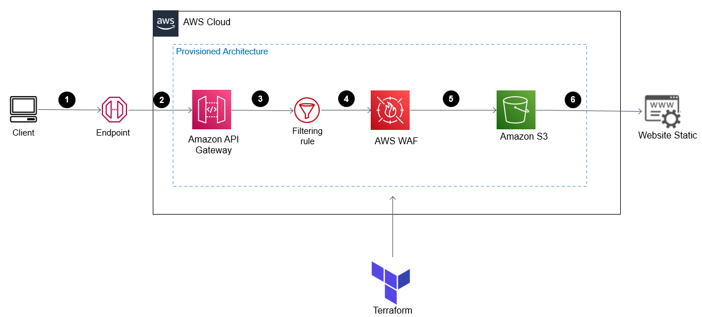
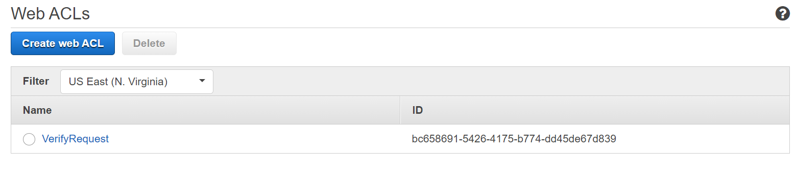
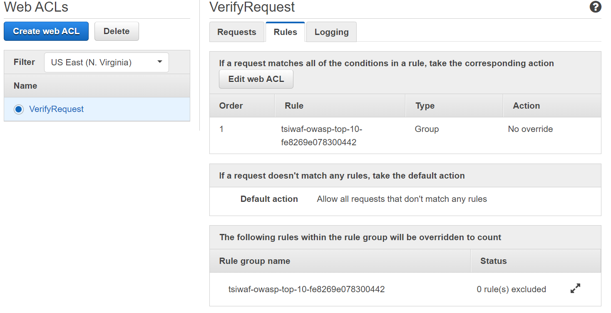
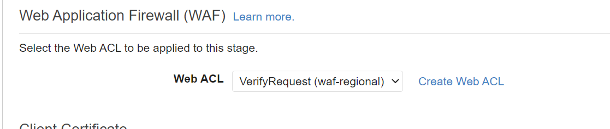

Proteção WAF ¶
Introdução¶
Caso seu objetivo seja boas práticas na hospedagem de um site estático, na qual você quer utilizar o endpoint fornecido da API Gateway (utilizando ela como proxy), mas além disso quer proteger seu WebSite de requisições maliciosas, esse é o tutorial adequado para você. Vamos utilizar os recursos do terraform para montar nossa infraestrutura.
Observe abaixo a arquitetura:
¶
Metodologia¶
Caso prefira, no vídeo abaixo é possível ver a implementação do projeto completo.
- Em primeiro momento, se ainda não clonou, no seu diretório clone o repositório e entre na raiz do repositório. Se clonou, siga para a etapa 2:
- Entre na branch
maincom o comando abaixo: - Na pasta raíz, exporte as credenciais da sua conta da AWS no terminal:
- Modifique o
index.htmle oerror.htmlde acordo com o site estático que deseja gerar para o usuário. - Inicie o ambiente Terraform, carregando as dependências necessárias:
- Aplique e solicite ao terraform que provisione os recursos solicitados na nuvem:
- Por fim, visualize se foi criado corretamente a infraestrutura no console da AWS.
Warning
Caso obtenha um erro WAFUnavailableEntityException depois da etapa 6, de acordo com um fórum da AWS pode ser necessário aguardar alguns minutos para criar alguns recursos que estão associados, sendo assim, basta executar o comando novamente.
Imagens de Verificação¶




Código¶
O código por completo se encontra no arquivo main.tf. As etapas abaixo explicam o passo a passo para cada recurso criado pelo terraform. Entretanto, vale ressaltar que só vamos explicar nessa aba, os recursos criados para o WAF, pois nesta aba da API Gateway como Proxy já explicamos as finalidades dos recursos criados.
Warning
Este código foi baseado na documentação do terraform, entretanto, o repositório foi arquivado, dificultando as boas práticas. Como solução, foi adicionada a pasta waf/ com todos os requisitos do owasp top ten de acordo com a referência.
Para garantir total segurança para o site, foi implementado o WAF com todas as 10 principais regras do OWASP. Sendo assim, foi criado uma WebACL para um WafRegional com o nome de VerifyRequest. Além disso, foi settado um grupo de regras que vem do módulo criado de acordo com a documentação do terraform. Por fim, é associado a WebACL criada com o estágio criado pela API Gateway.